for Text-to-3D Models
Faculty of Mathematics and Computer Science, Jagiellonian University, Kraków
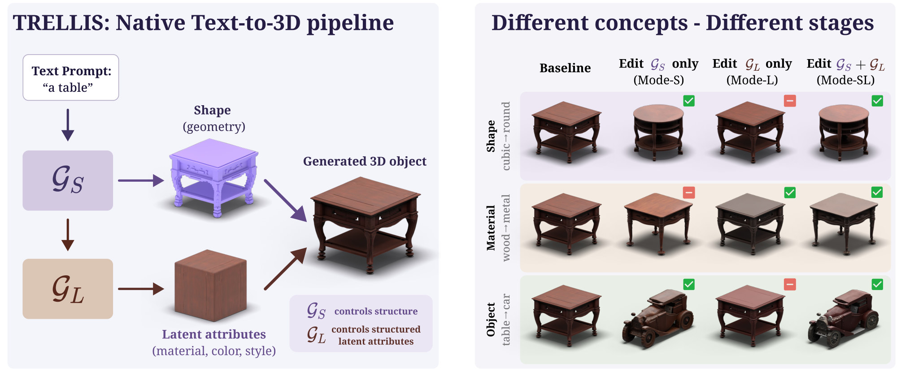
Concept erasure suppresses a target concept while preserving behavior on unrelated inputs. Existing closed-form methods were designed for 2D image diffusion and assume a single generative pathway, so one edit must cover geometry and texture at once. Native 3D generators, which synthesize structured 3D representations directly rather than by lifting 2D samples, violate this assumption. We show that shape and object concepts must be erased in the structural stage of the pipeline and material concepts in the appearance stage. We therefore formulate erasure in native text-to-3D as a stage-aware editing problem and introduce STAGE, a training-free, closed-form framework. STAGE confines each edit to the low-dimensional subspace spanned by the differences between erase and anchor embeddings, and relaxes the norm-preserving (orthogonal) constraint of prior editors into a least-squares affine correction that maps target activations onto safe anchors subject to a penalty on the displacement of retained prompts. The correction applies to the structural stage, the appearance stage, or both. We find that the stage an edit must reach is determined by concept type. On TRELLIS, the standard open native 3D generator, across 15 shape, material, and object concepts, STAGE reaches 66.7 on a composite score that balances forgetting the target concept against preserving everything else, aggregating CLIP-based semantic and physical metrics, versus 53.2 for the strongest adapted baseline.
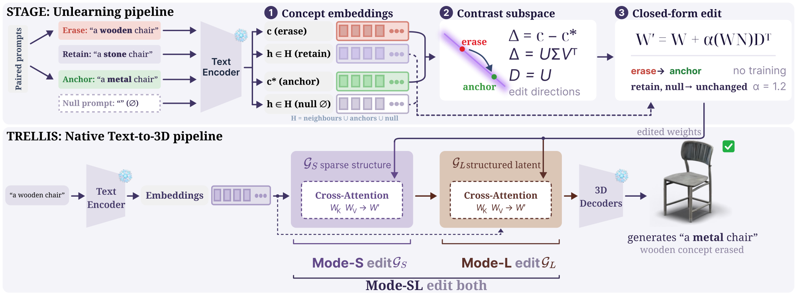
Erase and anchor prompts differ only in the concept word. The leading singular directions of their token-level differences span the subspace the edit may act in.
A least-squares affine map moves erase embeddings onto their anchors, while anchors, the null prompt and other retained prompts stay in place.
The correction is folded exactly into the cross-attention of the stage the concept lives in, in seconds and without training.
T(c) = c + N(D⊤c) + n0 ⟶ W′ = W + (WN)D⊤, b′ = b + Wn0
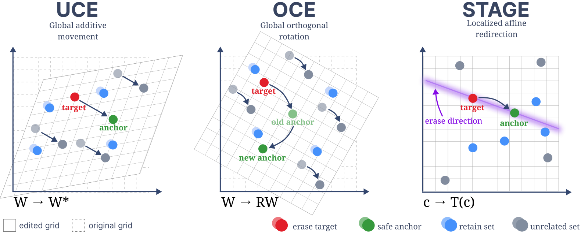
We evaluate on 15 concepts of TRELLIS, five shapes, five materials and five objects, with the 3D Unlearning Score (3D-US), which combines forgetting (F) of the erased concept and preservation (P) of all other concepts, measured with CLIP on renders and with Uni3D on point clouds or a material classifier. All methods edit the same stages.
| Method | Shape | Material | Object | Overall | ||||||
|---|---|---|---|---|---|---|---|---|---|---|
| F | P | 3D-US | F | P | 3D-US | F | P | 3D-US | 3D-US | |
| UCE | 0.61 | 0.85 | 66.9 | 0.22 | 0.84 | 30.8 | 0.57 | 0.65 | 51.9 | 47.5 |
| OCE | 0.73 | 0.67 | 67.9 | 0.36 | 0.74 | 41.8 | 0.83 | 0.41 | 53.2 | 53.2 |
| STAGE | 0.70 | 0.91 | 77.7 | 0.45 | 0.92 | 56.4 | 0.90 | 0.61 | 67.7 | 66.7 |
F and P lie in [0, 1], 3D-US in [0, 100], higher is better. Axis values are means over the five concepts of the axis, and Overall is the geometric mean of the three axes.
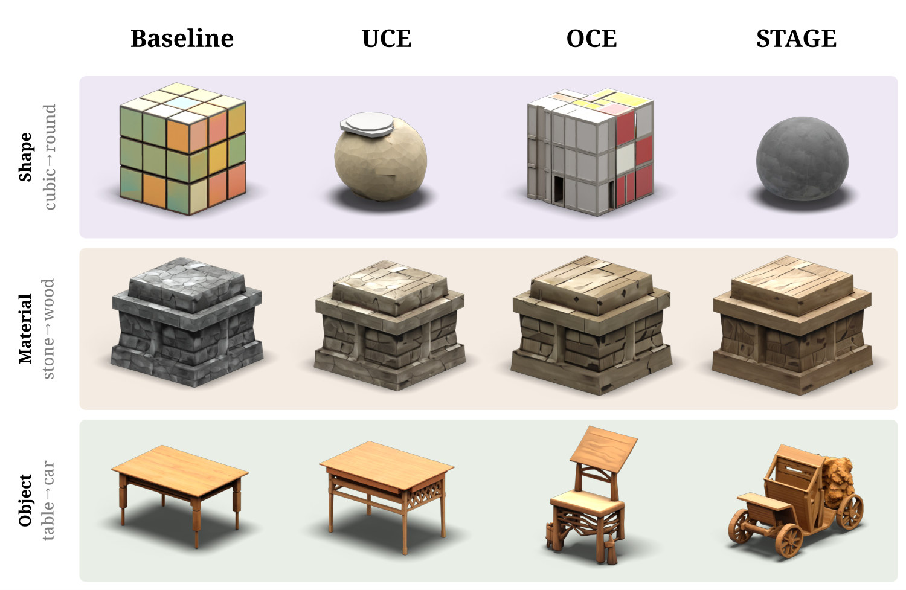
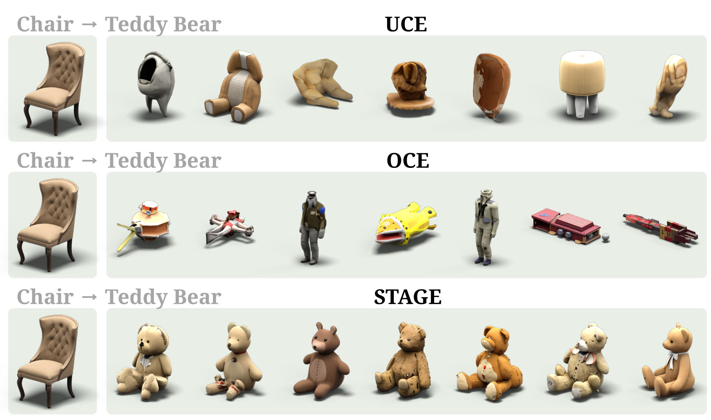
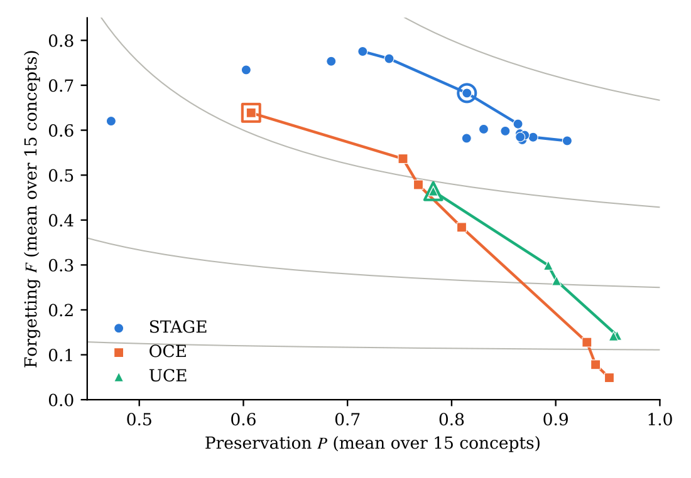
Every configuration of the hyperparameter sweeps of the three methods, placed by its mean forgetting and preservation. The STAGE configurations form a front above both baselines, and even at its default hyperparameters STAGE scores above both tuned baselines (60.1 vs 53.2).
Twelve evaluation prompts per concept, each with its fixed seed: the unedited model and the result of UCE, OCE and STAGE.
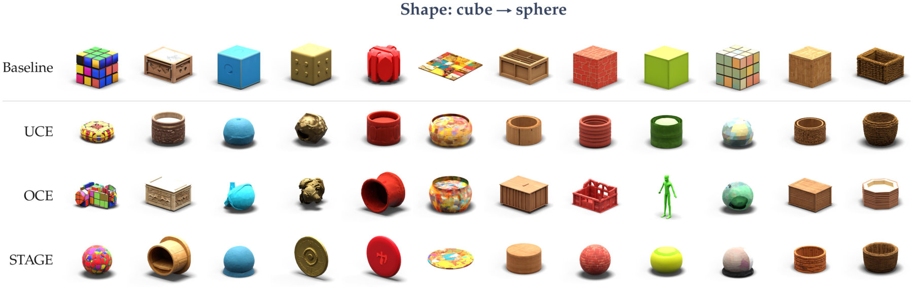
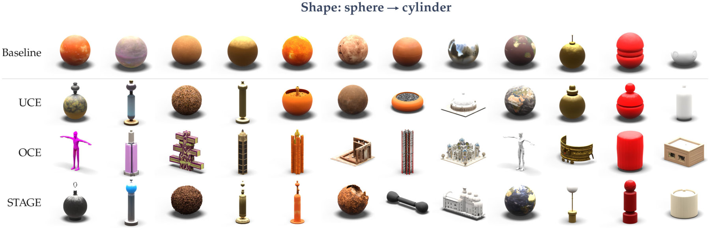
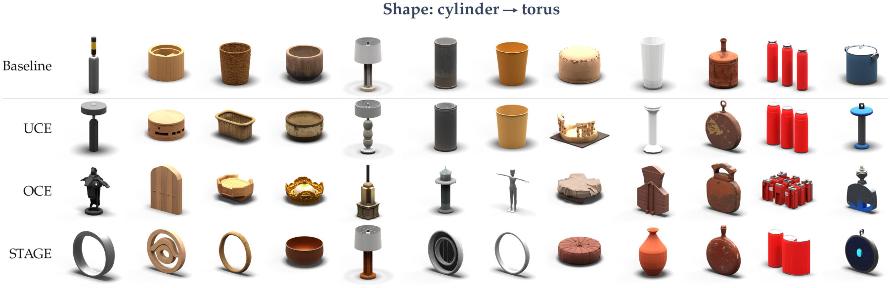
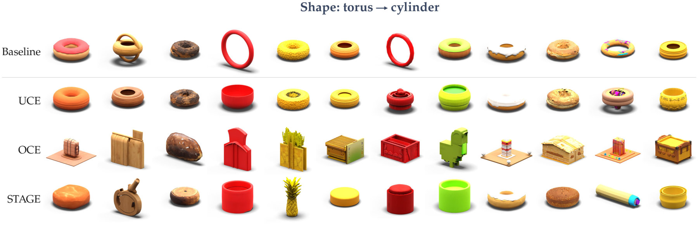
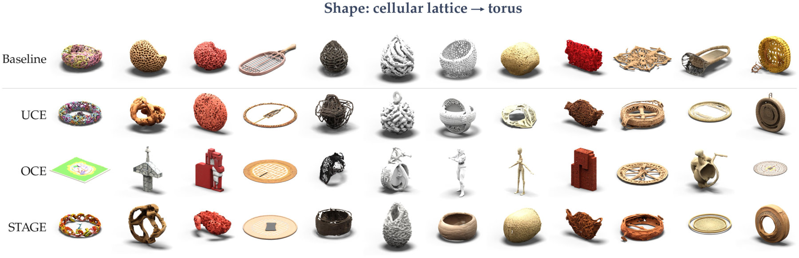
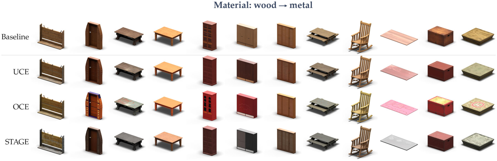
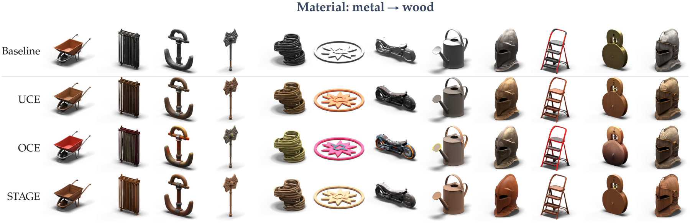
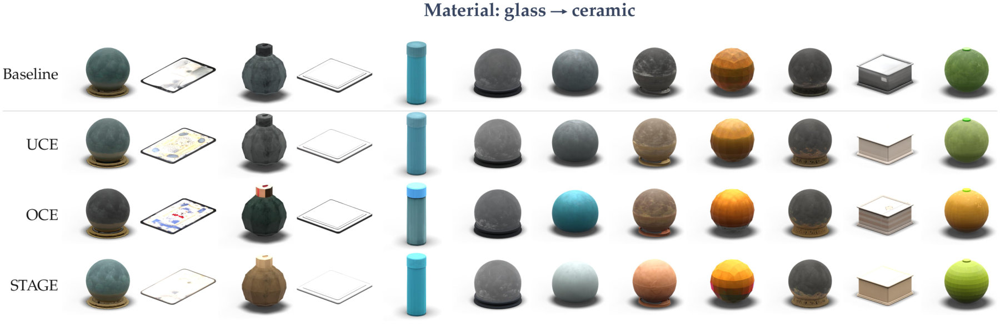
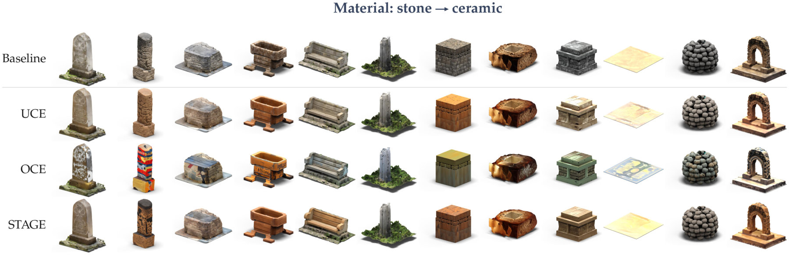
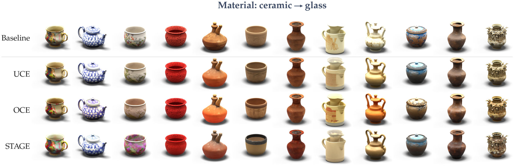
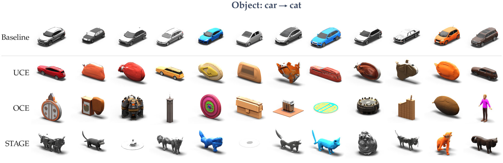
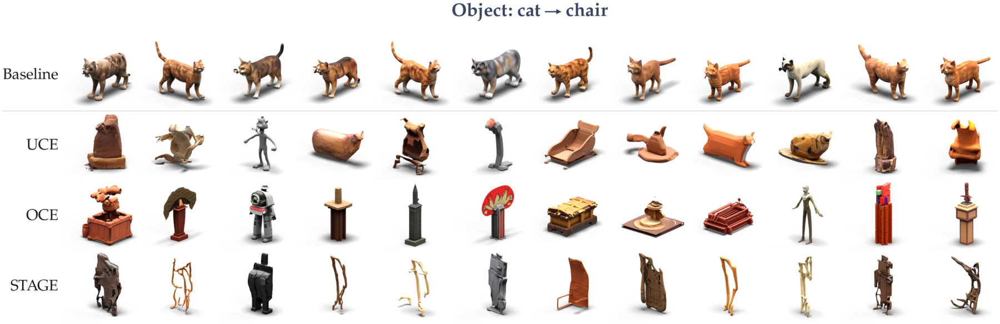
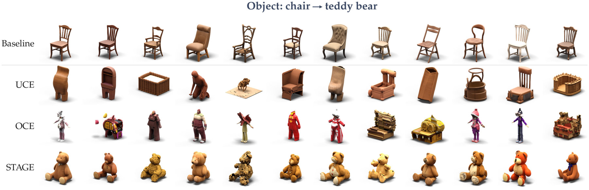
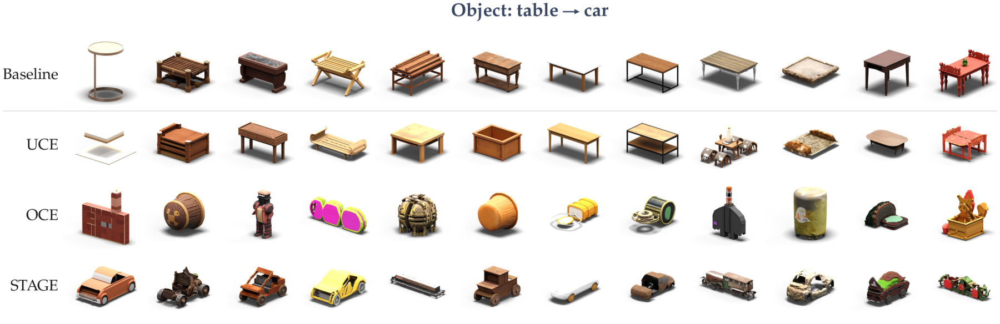
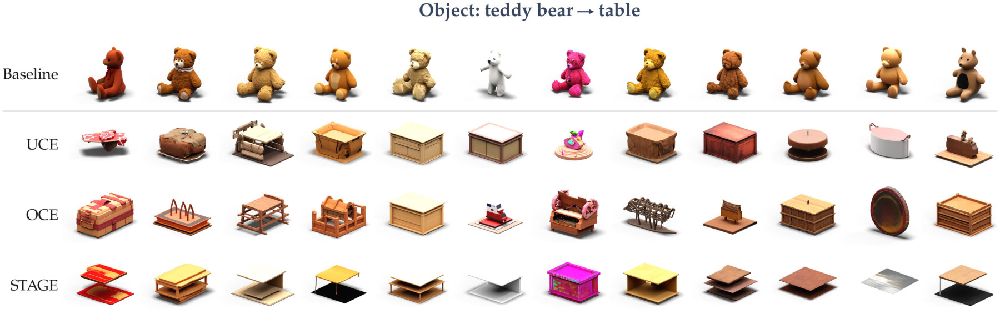
@misc{dziekan2026stage,
title = {{STAGE}: Subspace-Targeted Affine Generative Erasure for Text-to-3D Models},
author = {Dziekan, Karol and Spurek, Przemys{\l}aw and Malarz, Dawid},
year = {2026}
}